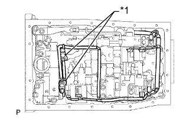
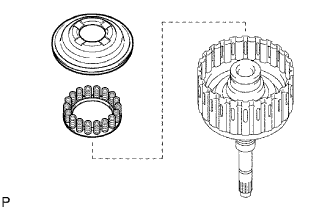
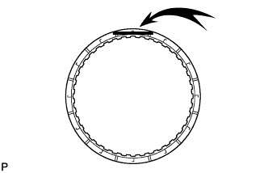
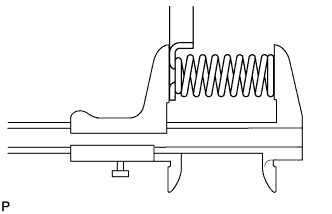
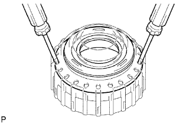
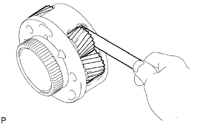
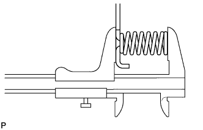
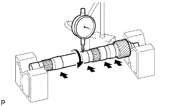
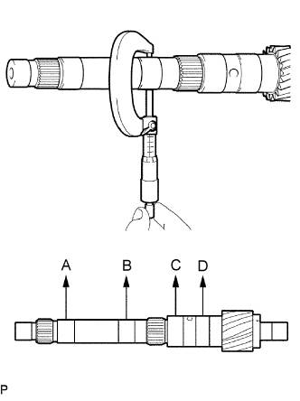
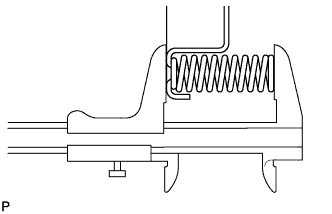

БЛОК АВТОМАТИЧЕСКОЙ ТРАНСМИССИИ > РАЗБОРКА |
| 1. СНИМИТЕ ЛЕВЫЙ РЫЧАГ ПРИВОДНОГО ВАЛА ТРАНСМИССИИ |
 |
Отверните гайку и снимите пружинную шайбу и левый рычаг приводного вала.
| 2. СНИМИТЕ ДАТЧИК ПОЛОЖЕНИЯ ПАРКИНГА / НЕЙТРАЛИ В СБОРЕ |
 |
С помощью отвертки загните лепестки стопорной шайбы.
Снимите гайку, стопорную шайбу и болт.
Снимите датчик положения паркинга/нейтрали.
| 3. СНИМИТЕ ШТУЦЕР ПАТРУБКА МАСЛЯНОГО РАДИАТОРА |
Снимите 2 штуцера патрубков масляного радиатора.
Снимите 2 кольцевых уплотнения со штуцеров патрубков масляного радиатора.
| *A | Для моделей с подогревателем: |
| *B | Для моделей без подогревателя: |
| 4. СНИМИТЕ ДАТЧИК ЧАСТОТЫ ВРАЩЕНИЯ |
 |
Выверните 2 болта и снимите 2 датчика частоты вращения.
Снимите с датчиков 2 кольцевых уплотнения.
| 5. СНИМИТЕ ТРУБКУ САПУНА АВТОМАТИЧЕСКОЙ ТРАНСМИССИИ |
 |
Выверните 2 болта.
Отсоедините трубку сапуна.
Снимите кольцевое уплотнение с патрубка.
| 6. СНИМИТЕ КОЖУХ АВТОМАТИЧЕСКОЙ ТРАНСМИССИИ |
Выверните 10 болтов.
| *A | Для моделей с 1GR-FE: |
| *B | Для моделей с 1KD-FTV: |
Снимите кожух трансмиссии.
| 7. СНИМИТЕ ЗАДНИЙ ПЕРЕХОДНИК РАЗДАТОЧНОЙ КОРОБКИ |
 |
Выверните 8 болтов.
Снимите переходник картера трансмиссии.
Снимите 2 соединительных кольца картера раздаточной коробки с переходника картера трансмиссии.
| 8. СНИМИТЕ ЗАДНИЙ САЛЬНИК ПЕРЕХОДНИКА КАРТЕРА ТРАНСМИССИИ |
 |
Извлеките сальник с помощью отвертки.
| 9. СНИМИТЕ МАСЛОПРИЕМНИК ПЕРЕХОДНИКА ЗАДНЕГО КАРТЕРА ТРАНСМИССИИ |
 |
С помощью съемника стопорных колец снимите пружинное стопорное кольцо и маслоприемник.
| 10. ЗАФИКСИРУЙТЕ КАРТЕР АВТОМАТИЧЕСКОЙ ТРАНСМИССИИ В СБОРЕ |
 |
Установите картер трансмиссии на приспособление для переборки.
| 11. СНИМИТЕ МАСЛЯНЫЙ ПОДДОН АВТОМАТИЧЕСКОЙ ТРАНСМИССИИ В СБОРЕ |
Снимите пробку сливного отверстия и выверните 20 болтов.
Снимите 4 магнита с масляного поддона.
| 12. ПРОВЕРЬТЕ МАСЛЯНЫЙ ПОДДОН АВТОМАТИЧЕСКОЙ ТРАНСМИССИИ В СБОРЕ |
Снимите магниты и с их помощью соберите стальные частицы.
Внимательно осмотрите посторонние включения и частицы, имеющиеся в поддоне и на магнитах, чтобы определить, какому типу износа подвергается трансмиссия.
| 13. СНИМИТЕ СЕТЧАТЫЙ МАСЛЯНЫЙ ФИЛЬТР КОРПУСА КЛАПАНОВ В СБОРЕ |
 |
Переверните трансмиссию.
Выверните 4 болта и снимите сетчатый масляный фильтр с корпуса клапанов.
Снимите кольцевое уплотнение с сетчатого масляного фильтра.
| 14. СНИМИТЕ ЖГУТ ЭЛЕКТРОПРОВОДКИ ТРАНСМИССИИ |
|  |
Выверните 2 болта, снимите 2 зажима датчиков температуры и отсоедините 2 датчика температуры ATF.
| *1 | Зажим датчика температуры |
Отсоедините 7 разъемов от электромагнитных клапанов.
 |
Выверните болт из трансмиссии.
Вытяните жгут электропроводки трансмиссии из картера трансмиссии, чтобы снять его.
Снимите кольцевое уплотнение с жгута электропроводки трансмиссии.
| 15. СНИМИТЕ КОРПУС КЛАПАНОВ ТРАНСМИССИИ В СБОРЕ |
Выверните болт и снимите крышку пружины фиксатора и пружину фиксатора.
 |
Выверните 19 болтов и снимите корпус клапанов.
| 16. СНИМИТЕ ПРОКЛАДКУ КАРТЕРА ТРАНСМИССИИ |
 |
Снимите 3 прокладки.
| 17. СНИМИТЕ ПРОКЛАДКУ ТОРМОЗНОГО БАРАБАНА |
 |
Снимите 3 прокладки.
| 18. СНИМИТЕ КОРПУС ЗАПОРНОГО ШАРИКА |
Снимите корпус и пружину запорного шарика.
| *1 | Корпус запорного шарика |
| *2 | Пружина |
| 19. СНИМИТЕ ПОРШЕНЬ ГИДРОАККУМУЛЯТОРА C-2 |
Подав сжатый воздух в отверстие для масла, извлеките пружину и поршень гидроаккумулятора C-2.
Снимите 2 кольцевых уплотнения с поршня.
| 20. СНИМИТЕ ПОРШЕНЬ ГИДРОАККУМУЛЯТОРА B-3 |
Подав сжатый воздух в отверстие для масла, извлеките пружину и поршень гидроаккумулятора B-3.
Снимите 2 кольцевых уплотнения с поршня.
| 21. СНИМИТЕ ПОРШЕНЬ ГИДРОАККУМУЛЯТОРА C-3 |
 |
Подав сжатый воздух в отверстие для масла, извлеките 2 пружины и поршень гидроаккумулятора C-3.
Снимите 2 кольцевых уплотнения с поршня.
| 22. СНИМИТЕ КЛАПАН ГИДРОАККУМУЛЯТОРА C-1 |
Снимите клапан гидроаккумулятора C-1 и 2 пружины.
| 23. СНИМИТЕ КРОНШТЕЙН ЗАПОРНОГО ШТИФТА СТОЯНОЧНОГО ТОРМОЗА |
Выверните 3 болта и снимите кронштейн.
| 24. СНИМИТЕ ЗАПОРНЫЙ СТЕРЖЕНЬ СТОЯНОЧНОГО ТОРМОЗА В СБОРЕ |
 |
Отсоедините запорный стержень стояночного тормоза от рычага клапана с ручным управлением, чтобы снять его.
| 25. СНИМИТЕ ВАЛ ЗАПОРНОГО ШТИФТА СТОЯНОЧНОГО ТОРМОЗА |
 |
Вытяните вал запорного штифта стояночного тормоза спереди, а затем снимите запорный штифт и пружину.
Снимите с вала разрезное уплотнение.
| 26. СНИМИТЕ РЫЧАГ КЛАПАНА С РУЧНЫМ УПРАВЛЕНИЕМ В СБОРЕ |
 |
С помощью молотка и отвертки срежьте распорную втулку и снимите ее с вала.
 |
С помощью бородка с тонким цилиндрическим концом и молотка выбейте пружинный штифт.
Вытяните вал рычага клапана с ручным управлением через картер и снимите рычаг клапана с ручным управлением.
| 27. СНИМИТЕ САЛЬНИК ВАЛА РЫЧАГА КЛАПАНА С РУЧНЫМ УПРАВЛЕНИЕМ |
С помощью отвертки извлеките 2 сальника.
| 28. СНИМИТЕ МАСЛЯНЫЙ НАСОС В СБОРЕ |
 |
Выверните 10 болтов.
Снимите масляный насос с помощью SST.
Снимите кольцевое уплотнение с переднего масляного насоса.
Снимите 2 кольца упорного подшипника с переднего масляного насоса.
| 29. СНИМИТЕ БАРАБАН МУФТЫ И ПЕРВИЧНЫЙ ВАЛ В СБОРЕ |
Снимите барабан муфты и первичный вал в сборе с картера трансмиссии.
Снимите упорную шайбу барабана муфты и 2 упорных игольчатых роликовых подшипника.
| 30. ПРОВЕРЬТЕ МУФТУ СВОБОДНОГО ХОДА № 2 В СБОРЕ |
 |
Удерживая ступицу муфты заднего хода, проверьте вращение муфты свободного хода в сборе.
Убедитесь, что муфта свободного хода свободно вращается по часовой стрелке и блокируется при вращении против часовой стрелки.
 | Заблокировано |
 | Разблокировано |
| 31. СНИМИТЕ МУФТУ СВОБОДНОГО ХОДА № 2 В СБОРЕ |
 |
Снимите муфту свободного хода и упорную шайбу барабана муфты № 2 с барабана муфты и первичного вала в сборе.
| 32. ЗАКРЕПИТЕ БАРАБАН МУФТЫ И ПЕРВИЧНЫЙ ВАЛ В СБОРЕ |
Поместите масляный насос на муфту гидротрансформатора, а затем установите на насос барабан муфты и первичный вал в сборе.
| *1 | Муфта гидротрансформатора |
| *2 | Масляный насос |
| 33. СНИМИТЕ СТУПИЦУ МУФТЫ ЗАДНЕГО ХОДА В СБОРЕ |
 |
С помощью отвертки снимите пружинное стопорное кольцо.
 |
Снимите ступицу муфты заднего хода в сборе, реактивную втулку муфты заднего хода, пружинящий диск сцепления, фланец муфты заднего хода, 5 дисков муфты заднего хода и 4 пластины сцепления с барабана муфты.
| 34. СНИМИТЕ РЕАКТИВНУЮ ВТУЛКУ МУФТЫ ЗАДНЕГО ХОДА |
 |
Извлеките реактивную втулку муфты заднего хода из ступицы муфты заднего хода.
| 35. СНИМИТЕ ДИСК ЗАДНЕЙ МУФТЫ |
Извлеките пружинящий диск сцепления, фланец муфты заднего хода, 5 дисков и 4 пластины из ступицы муфты заднего хода.
| 36. ПРОВЕРЬТЕ ДИСК ЗАДНЕЙ МУФТЫ |
Замените все диски при наличии какого-либо из следующих дефектов: 1) износа или подгорания диска, пластины или фланца; 2) отслоения или выцветания фрикционной накладки диска; 3) повреждения (даже небольшого) канавок или проштампованных номеров.
| 37. ПРОВЕРЬТЕ СТУПИЦУ МУФТЫ ЗАДНЕГО ХОДА В СБОРЕ |
 |
С помощью индикатора часового типа измерьте внутренний диаметр втулки ступицы муфты заднего хода.
| 38. СНИМИТЕ СТУПИЦУ МУФТЫ ПЕРЕДНЕГО ХОДА В СБОРЕ |
 |
Снимите ступицу муфты переднего хода с барабана муфты.
Снимите 2 упорных игольчатых роликовых подшипника со ступицы муфты переднего хода.
| 39. ПРОВЕРЬТЕ СТУПИЦУ МУФТЫ ПЕРЕДНЕГО ХОДА В СБОРЕ |
 |
С помощью индикатора часового типа измерьте внутренний диаметр втулки ступицы муфты переднего хода.
| 40. СНИМИТЕ СТУПИЦУ МНОГОДИСКОВОЙ МУФТЫ |
Снимите ступицу многодисковой муфты с барабана муфты.
Снимите 2 кольца упорного подшипника со ступицы многодисковой муфты.
| 41. СНИМИТЕ ПЕРВИЧНЫЙ ВАЛ В СБОРЕ |
 |
Снимите упорный игольчатый роликовый подшипник с барабана муфты.
Снимите первичный вал в сборе с барабана муфты.
| 42. СНИМИТЕ МАСЛОУПЛОТНИТЕЛЬНОЕ КОЛЬЦО ПЕРВИЧНОГО ВАЛА |
Снимите 3 маслоуплотнительных кольца с первичного вала.
| 43. СНИМИТЕ ДИСК МНОГОДИСКОВОЙ МУФТЫ ПЕРЕДНЕГО ХОДА |
С помощью отвертки снимите стопорное кольцо отверстия.
Для моделей с 1GR-FE:
Снимите 2 фланца, 6 дисков и 5 пластин с первичного вала.
Для моделей с 1KD-FTV:
Снимите 2 фланца, 7 дисков и 6 пластин с первичного вала.
| 44. ПРОВЕРЬТЕ ДИСК МНОГОДИСКОВОЙ МУФТЫ ПЕРЕДНЕГО ХОДА |
 |
Замените все диски при наличии какого-либо из следующих дефектов: 1) износа или подгорания диска, пластины или фланца; 2) отслоения или выцветания фрикционной накладки диска; 3) повреждения (даже небольшого) канавок или проштампованных номеров.
| 45. СНИМИТЕ КОМПЕНСАТОР МУФТЫ № 1 |
Поместите SST на компенсатор муфты и сожмите стяжную пружину прессом.
С помощью съемника стопорных колец снимите пружинное стопорное кольцо.
|  |
Снимите компенсатор муфты и стяжную пружину муфты переднего хода с первичного вала в сборе.
Снимите кольцевое уплотнение с компенсатора муфты № 1.
| 46. ПРОВЕРЬТЕ СТЯЖНУЮ ПРУЖИНУ МУФТЫ ПЕРЕДНЕГО ХОДА В СБОРЕ |
 |
С помощью штангенциркуля измерьте длину пружины с седлом в свободном состоянии.
| 47. СНИМИТЕ ПОРШЕНЬ МУФТЫ ПЕРЕДНЕГО ХОДА |
Удерживая рукой первичный вал, подайте в него сжатый воздух, чтобы извлечь поршень муфты переднего хода.
Снимите 2 кольцевых уплотнения с поршня муфты переднего хода.
| 48. СНИМИТЕ ФЛАНЕЦ МУФТЫ ЗАДНЕГО ХОДА |
Снимите фланец муфты заднего хода с барабана муфты.
| 49. СНИМИТЕ ДИСК МУФТЫ ПРЯМОЙ ПЕРЕДАЧИ |
С помощью отвертки снимите 2 пружинных стопорных кольца с барабана муфты.
Для моделей с 1GR-FE:
Снимите фланец муфты заднего хода, 5 дисков и 5 пластин с барабана муфты.
Для моделей с 1KD-FTV:
Снимите фланец муфты заднего хода, 6 дисков и 6 пластин с барабана муфты.
| 50. ПРОВЕРЬТЕ ДИСК МУФТЫ ПРЯМОЙ ПЕРЕДАЧИ |
|  |
Замените все диски при наличии какого-либо из следующих дефектов: 1) износа или подгорания диска, пластины или фланца; 2) отслоения или выцветания фрикционной накладки диска; 3) повреждения (даже небольшого) канавок или проштампованных номеров.
| 51. СНИМИТЕ КОМПЕНСАТОР МУФТЫ № 3 |
Поместите SST на компенсатор муфты и сожмите стяжную пружину прессом.
С помощью SST снимите пружинное стопорное кольцо.
| 52. СНИМИТЕ СТЯЖНУЮ ПРУЖИНУ МУФТЫ ЗАДНЕГО ХОДА В СБОРЕ |
Снимите стяжную пружину муфты заднего хода и кольцевое уплотнение с поршня муфты заднего хода.
| 53. ПРОВЕРЬТЕ СТЯЖНУЮ ПРУЖИНУ МУФТЫ ЗАДНЕГО ХОДА В СБОРЕ |
|  |
С помощью штангенциркуля измерьте длину пружины с седлом в свободном состоянии.
| 54. СНИМИТЕ ПОРШЕНЬ МУФТЫ ЗАДНЕГО ХОДА В СБОРЕ |
 |
Снимите поршень муфты заднего хода в сборе с барабана муфты.
Снимите кольцевое уплотнение с поршня муфты заднего хода.
Снимите кольцевое уплотнение с барабана муфты.
| 55. СНИМИТЕ ПОРШЕНЬ МУФТЫ ПРЯМОЙ ПЕРЕДАЧИ В СБОРЕ |
Установите SST на поршень муфты прямой передачи и сожмите стяжную пружину прессом.
С помощью SST снимите пружинное стопорное кольцо.
|  |
С помощью 2 отверток снимите поршень муфты прямой передачи в сборе с барабана муфты.
 |
Снимите компенсатор муфты № 2 и стяжную пружину муфты прямой передачи с поршня муфты прямой передачи.
 |
Снимите 2 кольцевых уплотнения с поршня муфты прямой передачи.
| 56. ПРОВЕРЬТЕ СТЯЖНУЮ ПРУЖИНУ МУФТЫ ПРЯМОЙ ПЕРЕДАЧИ В СБОРЕ |
 |
С помощью штангенциркуля измерьте длину пружины с седлом в свободном состоянии.
| 57. СНИМИТЕ ПРУЖИННОЕ СТОПОРНОЕ КОЛЬЦО ТОРМОЗА № 3 |
 |
С помощью отвертки извлеките пружинное стопорное кольцо тормоза № 3 из картера.
| 58. СНИМИТЕ ТОРМОЗНОЙ ДИСК № 3 |
Извлеките из картера фланец, 4 диска, 4 пластины и пружинящий диск.
| 59. ПРОВЕРЬТЕ ТОРМОЗНОЙ ДИСК № 3 |
 |
Замените все диски при наличии какого-либо из следующих дефектов: 1) износа или подгорания диска, пластины или фланца; 2) отслоения или выцветания фрикционной накладки диска; 3) повреждения (даже небольшого) канавок или проштампованных номеров.
| 60. СНИМИТЕ СТОПОРНОЕ КОЛЬЦО ОТВЕРСТИЯ ПОРШНЯ ТОРМОЗНОГО ЦИЛИНДРА 2-Й ПЕРЕДАЧИ |
 |
С помощью SST снимите пружинное стопорное кольцо.
| 61. СНИМИТЕ МУФТУ СВОБОДНОГО ХОДА В СБОРЕ |
Извлеките из картера муфту свободного хода в сборе и упорную шайбу водила планетарной передачи № 1.
| 62. СНИМИТЕ ТОРМОЗНОЙ ЦИЛИНДР 2-Й ПЕРЕДАЧИ |
 |
Извлеките из картера тормозной цилиндр 2-й передачи.
| 63. СНИМИТЕ ПОРШЕНЬ ТОРМОЗНОГО ЦИЛИНДРА 2-Й ПЕРЕДАЧИ |
Используя SST и пресс, сожмите стяжную пружину и извлеките пружинное стопорное кольцо.
Удерживая тормозной цилиндр 2-й передачи, подайте сжатый воздух в тормозной цилиндр 2-й передачи, чтобы извлечь поршень тормозного цилиндра 2-й передачи.
Снимите 2 кольцевых уплотнения с поршня тормозного цилиндра 2-й передачи.
| 64. ПРОВЕРЬТЕ СТЯЖНУЮ ПРУЖИНУ ПОРШНЯ ТОРМОЗНОГО ЦИЛИНДРА № 3 В СБОРЕ |
 |
С помощью штангенциркуля измерьте длину пружины с седлом в свободном состоянии.
| 65. СНИМИТЕ ПЕРЕДНЮЮ ПЛАНЕТАРНУЮ ПЕРЕДАЧУ В СБОРЕ |
Извлеките из картера внутреннее кольцо муфты свободного хода и переднюю планетарную передачу в сборе.
 |
Снимите кольцо упорного подшипника, упорный игольчатый роликовый подшипник и упорную шайбу водила планетарной передачи № 2 с передней планетарной передачи в сборе.
| 66. ПРОВЕРЬТЕ ПЕРЕДНЮЮ ПЛАНЕТАРНУЮ ПЕРЕДАЧУ В СБОРЕ |
|  |
С помощью комплекта плоских щупов измерьте осевой зазор ведущей шестерни передней планетарной передачи.
 |
С помощью нутромера измерьте внутренний диаметр втулки передней планетарной передачи.
| 67. ПРОВЕРЬТЕ МУФТУ СВОБОДНОГО ХОДА В СБОРЕ |
 |
Установите муфту свободного хода на внутреннее кольцо муфты свободного хода.
Удерживая внутреннее кольцо муфты свободного хода, проверьте вращение муфты свободного хода в сборе. Убедитесь, что муфта свободного хода свободно вращается против часовой стрелки и блокируется при вращении по часовой стрелке.
| Заблокировано |
| Разблокировано |
Снимите муфту свободного хода с внутреннего кольца муфты свободного хода.
| 68. СНИМИТЕ КОРОННУЮ ШЕСТЕРНЮ ПЕРЕДНЕЙ ПЛАНЕТАРНОЙ ПЕРЕДАЧИ |
 |
Извлеките из картера трансмиссии коронную шестерню передней планетарной передачи и упорный игольчатый роликовый подшипник.
| 69. СНИМИТЕ ЦЕНТРАЛЬНУЮ КОРОННУЮ ШЕСТЕРНЮ ПЛАНЕТАРНОЙ ПЕРЕДАЧИ |
С помощью отвертки снимите пружинное стопорное кольцо.
 |
Снимите коронную шестерню центральной планетарной передачи и фланец коронной шестерни передней планетарной передачи с коронной шестерни передней планетарной передачи.
| 70. СНИМИТЕ ТОРМОЗНОЙ ДИСК № 1 |
Снимите фланец, 3 диска и 3 пластины с картера.
| 71. ПРОВЕРЬТЕ ТОРМОЗНОЙ ДИСК № 1 |
 |
Замените все диски при наличии какого-либо из следующих дефектов: 1) износа или подгорания диска, пластины или фланца; 2) отслоения или выцветания фрикционной накладки диска; 3) повреждения (даже небольшого) канавок или проштампованных номеров.
| 72. СНИМИТЕ СТОПОРНОЕ КОЛЬЦО СТЯЖНОЙ ПРУЖИНЫ ПОРШНЯ ТОРМОЗНОГО ЦИЛИНДРА |
С помощью отвертки извлеките пружинное стопорное кольцо стяжной пружины поршня тормозного цилиндра из картера.
| 73. СНИМИТЕ СТЯЖНУЮ ПРУЖИНУ ПОРШНЯ ТОРМОЗНОГО ЦИЛИНДРА В СБОРЕ |
Извлеките стяжную пружину поршня тормозного цилиндра и поршень тормозного цилиндра № 1 вместе с тормозным цилиндром № 1 из картера трансмиссии.
| 74. ПРОВЕРЬТЕ СТЯЖНУЮ ПРУЖИНУ ПОРШНЯ ТОРМОЗНОГО ЦИЛИНДРА В СБОРЕ |
|  |
С помощью штангенциркуля измерьте длину пружины с седлом в свободном состоянии.
| 75. СНИМИТЕ ПОРШЕНЬ ТОРМОЗНОГО ЦИЛИНДРА № 1 |
Удерживая тормозной цилиндр № 1, подайте сжатый воздух в тормозной цилиндр № 1, чтобы извлечь поршень тормозного цилиндра № 1.
Снимите 2 кольцевых уплотнения с поршня тормозного цилиндра № 1.
| 76. СНИМИТЕ ТОРМОЗНОЙ ДИСК № 2 |
 |
С помощью отвертки извлеките пружинное стопорное кольцо из картера.
Извлеките фланец, 3 диска, 3 пластины и стяжную пружину поршня тормозного цилиндра из картера.
| 77. ПРОВЕРЬТЕ ТОРМОЗНОЙ ДИСК № 2 |
 |
Замените все диски при наличии какого-либо из следующих дефектов: 1) износа или подгорания диска, пластины или фланца; 2) отслоения или выцветания фрикционной накладки диска; 3) повреждения (даже небольшого) канавок или проштампованных номеров.
| 78. ПРОВЕРЬТЕ СТЯЖНУЮ ПРУЖИНУ ПОРШНЯ ТОРМОЗНОГО ЦИЛИНДРА № 2 В СБОРЕ |
 |
С помощью штангенциркуля измерьте длину пружины с седлом в свободном состоянии.
| 79. СНИМИТЕ ПОРШЕНЬ ТОРМОЗНОГО ЦИЛИНДРА № 2 |
Подайте сжатый воздух в картер трансмиссии, чтобы извлечь поршень тормозного цилиндра № 2.
Снимите 2 кольцевых уплотнения с поршня тормозного цилиндра № 2.
| 80. СНИМИТЕ ЦЕНТРАЛЬНУЮ ПЛАНЕТАРНУЮ ПЕРЕДАЧУ В СБОРЕ |
 |
Извлеките из картера кольцо упорного подшипника, центральную планетарную передачу и солнечную шестерню планетарной передачи.
| 81. ПРОВЕРЬТЕ ЦЕНТРАЛЬНУЮ ПЛАНЕТАРНУЮ ПЕРЕДАЧУ В СБОРЕ |
 |
С помощью комплекта плоских щупов измерьте осевой зазор ведущей шестерни центральной планетарной передачи.
| 82. СНИМИТЕ ПРОМЕЖУТОЧНЫЙ ВАЛ |
С помощью отвертки извлеките пружинное стопорное кольцо из картера.
 |
Извлеките из картера промежуточный вал вместе с муфтой свободного хода № 3 в сборе.
| 83. ПРОВЕРЬТЕ МУФТУ СВОБОДНОГО ХОДА № 3 В СБОРЕ |
 |
Удерживая фланец коронной шестерни задней планетарной передачи, проверьте вращение муфты свободного хода. Убедитесь, что муфта свободного хода свободно вращается против часовой стрелки и блокируется при вращении по часовой стрелке.
| Заблокировано |
| Разблокировано |
| 84. СНИМИТЕ МУФТУ СВОБОДНОГО ХОДА № 3 В СБОРЕ |
 |
Снимите муфту свободного хода № 3 в сборе и внутреннее кольцо муфты свободного хода с промежуточного вала.
| 85. СНИМИТЕ ФЛАНЕЦ КОРОННОЙ ШЕСТЕРНИ ЗАДНЕЙ ПЛАНЕТАРНОЙ ПЕРЕДАЧИ В СБОРЕ |
 |
Снимите фланец коронной шестерни планетарной передачи, 2 кольца упорного подшипника и упорный игольчатый роликовый подшипник с промежуточного вала.
| 86. ПРОВЕРЬТЕ ФЛАНЕЦ КОРОННОЙ ШЕСТЕРНИ ЗАДНЕЙ ПЛАНЕТАРНОЙ ПЕРЕДАЧИ В СБОРЕ |
 |
С помощью индикатора часового типа измерьте внутренний диаметр втулки коронной шестерни задней планетарной передачи.
| 87. ПРОВЕРЬТЕ ПРОМЕЖУТОЧНЫЙ ВАЛ |
|  |
С помощью индикатора часового типа измерьте биение промежуточного вала.
|  |
С помощью микрометра измерьте диаметр промежуточного вала в показанных на рисунке местах.
| 88. СНИМИТЕ СТОПОРНУЮ ПРУЖИНУ ТОРМОЗНОЙ ПЛАСТИНЫ |
 |
| 89. СНИМИТЕ ТОРМОЗНОЙ ДИСК № 4 |
Извлеките 7 пластин, 8 дисков и 2 фланца из картера.
| 90. ПРОВЕРЬТЕ ТОРМОЗНОЙ ДИСК № 4 |
 |
Замените все диски при наличии какого-либо из следующих дефектов: 1) износа или подгорания диска, пластины или фланца; 2) отслоения или выцветания фрикционной накладки диска; 3) повреждения (даже небольшого) канавок или проштампованных номеров.
| 91. СНИМИТЕ ЗАДНЮЮ ПЛАНЕТАРНУЮ ПЕРЕДАЧУ В СБОРЕ |
Извлеките из картера заднюю планетарную передачу в сборе.
Снимите 2 упорных игольчатых роликовых подшипника с задней планетарной передачи.
 |
Извлеките кольцо упорного подшипника из картера.
| 92. ПРОВЕРЬТЕ ЗАДНЮЮ ПЛАНЕТАРНУЮ ПЕРЕДАЧУ В СБОРЕ |
 |
С помощью комплекта плоских щупов измерьте осевой зазор ведущей шестерни задней планетарной передачи.
 |
С помощью индикатора часового типа измерьте внутренний диаметр втулки задней планетарной передачи.
| 93. СНИМИТЕ СТЯЖНУЮ ПРУЖИНУ ТОРМОЗА 1-Й ПЕРЕДАЧИ И ПЕРЕДАЧИ ЗАДНЕГО ХОДА В СБОРЕ |
Установите SST на держатель пружины и сожмите стяжную пружину тормоза.
Используя SST, снимите пружинное стопорное кольцо и стяжную пружину тормоза.
| *1 | Пружинное стопорное кольцо |
| 94. ПРОВЕРЬТЕ СТЯЖНУЮ ПРУЖИНУ ТОРМОЗА 1-Й ПЕРЕДАЧИ И ПЕРЕДАЧИ ЗАДНЕГО ХОДА В СБОРЕ |
|  |
С помощью штангенциркуля измерьте длину пружины с седлом в свободном состоянии.
| 95. СНИМИТЕ ПОРШЕНЬ ТОРМОЗНОГО ЦИЛИНДРА 1-Й ПЕРЕДАЧИ И ПЕРЕДАЧИ ЗАДНЕГО ХОДА |
 |
Подайте сжатый воздух в картер трансмиссии, чтобы извлечь поршень тормозного цилиндра 1-й передачи и передачи заднего хода.
Снимите кольцевое уплотнение с поршня тормозного цилиндра 1-й передачи и передачи заднего хода.
| 96. СНИМИТЕ РЕАКТИВНУЮ ВТУЛКУ ТОРМОЗА |
С помощью SST снимите реактивную втулку.
Снимите 2 кольцевых уплотнения с реактивной втулки.
| 97. СНИМИТЕ ПОРШЕНЬ ТОРМОЗНОГО ЦИЛИНДРА № 4 |
Используя SST, снимите поршень тормозного цилиндра.
Снимите с поршня тормозного цилиндра 2 кольцевых уплотнения.